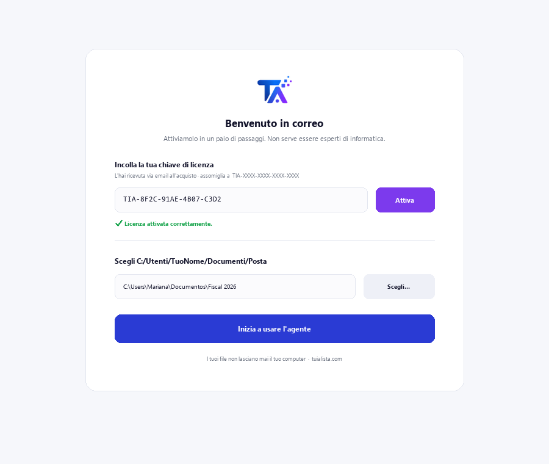
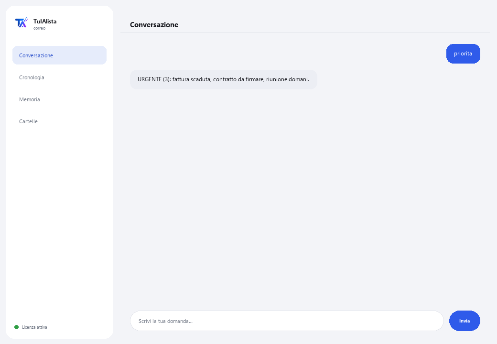

Agente Posta
Organizza la tua casella, ti dice cosa è urgente e redige risposte per te — elaborando tutto sul tuo computer.
Cosa risolve e cosa ti serve?
La posta elettronica è uno dei maggiori consumatori di tempo della giornata: decine di messaggi dove l'urgente si mescola al rumore. Questo agente trasforma quella casella caotica in una lista di azioni chiara — prioritaria, con compiti estratti e bozze pronte.
- Ti serve: la tua chiave di licenza (TIA-XXXX-XXXX-XXXX-XXXX) e la cartella con le tue email esportate (.eml, .mbox, .txt o .csv). Niente Python né conoscenze tecniche.
- Primo risultato in meno di 5 minuti: installi, attivi, scegli la tua cartella ed esegui priorita per vedere la tua casella ordinata per urgenza.
- Le tue email non lasciano mai il tuo computer — l'analisi gira in locale.
soporte@tuialista.com o visita tuialista.com/soporte — di solito rispondiamo lo stesso giorno lavorativo.1 Cosa fa questo agente
Gli indichi la cartella con le tue email esportate e lui:
- Le legge tutte (.eml, .mbox, .txt e .csv), senza connessione a server di posta.
- Assegna priorità a ogni messaggio: urgente, importante, normale o basso.
- Estrae i compiti che ti vengono richiesti, con chi li chiede e per quando.
- Rileva probabili pendenti senza risposta.
- Redige bozze di risposta professionali nella lingua dell'email.
- Raggruppa per mittente e cerca nelle tue email.
- Risponde alle tue domande sulla casella: “cosa mi hanno chiesto con scadenza questa settimana?”
Risultato: smetti di perdere tempo nella casella e agisci prima su ciò che conta davvero.
2 Installazione (2 minuti)
Per Windows. Non serve internet permanente né caricare nulla sul cloud.
Scarica l'installer da tuialista.com/descargar (agente Posta) e aprilo. Crea un collegamento sul desktop con il logo — non richiede Python né terminale.
Doppio clic sulla nuova icona. Incolla la tua chiave di licenza (ricevuta via email all'acquisto) e premi Attiva. Vedrai un segno di spunta verde quando è valida.
Seleziona la cartella con le tue email esportate e premi Inizia a usare l'agente. La prossima volta si avvia direttamente — ricorda la tua chiave e la tua cartella.

3 Come usarlo
L'agente apre una finestra di chat, come un'app di messaggistica — non è uno schermo nero da programmatore. Scrivi il tuo comando o la tua domanda nella casella di testo in basso, premi Invia (o Invio), e la risposta appare come un messaggio, proprio come in questa immagine reale:

I comandi seguenti sono le parole che puoi scrivere nella stessa casella di testo:
> prioritaLa tua casella ordinata per urgenza: URGENTE, IMPORTANTE, NORMALE, BASSO. Evidenzia quelli con scadenza.
> riepilogoPanoramica esecutiva della casella: quanti urgenti/importanti, mittenti più frequenti e cosa gestire per primo.
> compitiEmail che richiedono un'azione, con chi la richiede, la priorità e la scadenza menzionata se presente.
> rispondi <oggetto>Bozza di risposta all'email che indichi (per oggetto o numero), nella lingua dell'originale, con spazi [TRA PARENTESI] da completare.
> in sospesoEmail che richiedono azione e il cui mittente non appare come destinatario di un'altra tua email — probabilmente senza risposta.
> mittentiRaggruppa le tue email per mittente, ordinate per volume.
> cerca <testo>Cerca una parola o frase nell'oggetto e nel testo. Es.: cerca fattura marzo.
> domanda libera?Scrivi qualsiasi domanda in linguaggio naturale, es.: quali email urgenti ho questa settimana?
> esciTermina la sessione (funziona anche exit).
4 Esempi di uso comune
Iniziare la giornata dall'urgente
priorita — vedi prima l'URGENTE e ciò che ha una scadenza.
Non dimenticare ciò che ti hanno chiesto
compiti
Rispondere velocemente e bene
rispondi proposta di progetto — ottieni una bozza professionale pronta da rivedere e inviare.
Rilevare ciò che è rimasto senza risposta
in sospeso
5 Domande frequenti
Le mie email vengono caricate su internet?
Si connette al mio account Gmail/Outlook?
Ho bisogno di internet per usarlo?
Come decide la priorità?
In quale lingua redige le risposte?
Come rileva i “pendenti senza risposta”?
Posso cambiare la cartella delle email?
Legge gli allegati (PDF, Word)?
Modifica o invia email?
Conserva la cronologia tra le sessioni?
6 Risoluzione dei problemi
Mostra “0 email”
Un .csv non viene letto bene
Mostra “Licenza non valida” o chiede di riconnettersi
“Nessun fornitore IA configurato”
Nessuna di queste soluzioni ha risolto il tuo problema? Scrivici direttamente — saremo felici di rivederlo con te.
soporte@tuialista.com o visita tuialista.com/soporte — di solito rispondiamo lo stesso giorno lavorativo.7 Privacy e riservatezza
Le tue email non lasciano mai il tuo computer.
- L'agente legge ed elabora i file in locale, sul tuo stesso dispositivo. Non si connette al tuo server di posta né carica le tue email da nessuna parte.
- La priorizzazione, il rilevamento dei compiti e il raggruppamento per mittente avvengono sul tuo dispositivo.
- L'unica cosa che viaggia su internet è: (1) una verifica che la tua licenza sia attiva — che non include il contenuto delle tue email —, e (2) quando chiedi un riepilogo, una bozza o una domanda, viene inviato un frammento delle email rilevanti al motore IA per redigere la risposta.